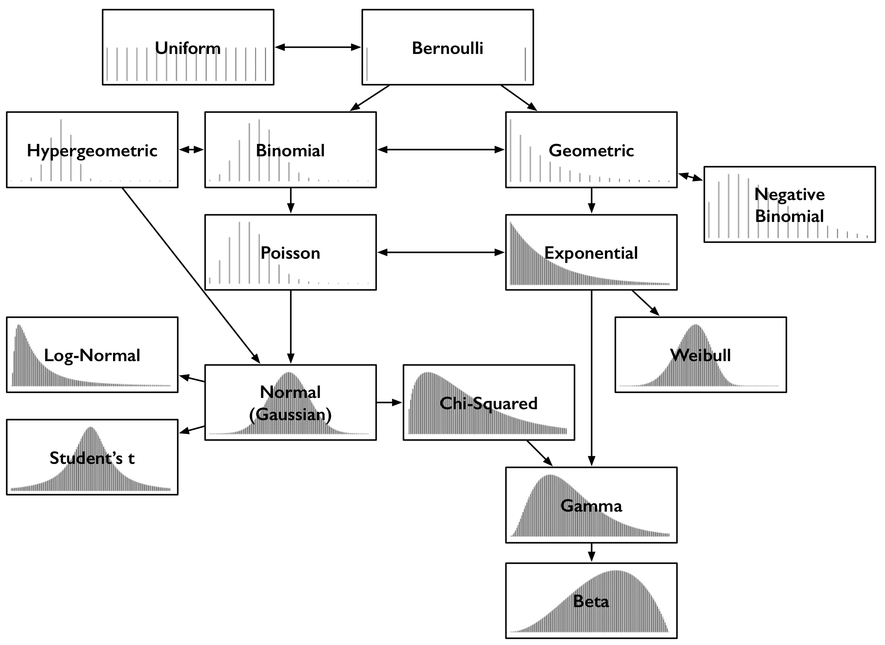

Poisson Distributed Forecast


This is an ongoing project wherein I am exploring methods for generating predictions for discrete time series data.
This can be called many things: predictive maintenance, condition based maintenance.
This data falls within the exponential family of probability distributions, as the output event is rare, but could occur multiple times within a day. This data is best described by the negative binomial distribution, as it displays overdispersion. Another important quality of the data is a large occurance of having a zero recorded for the output. It makes sense that the machines wouldn’t be erroring every single day, otherwise it would be too much effort to maintain, so having a large number of zeros is not strange.
Current
- Convolutional Neural Network
This one is intriguing. The CNN is unique among neural networks in that it is able to maintain a spatial relationship between data instances via the integration of convolutions. I will have to attempt it and report my findings.
- SARIMA
This is a classic approach in time series forecasting. Many people like SARIMA for how effective it is. This implementation is currently a work in progress.
Already tried
- Forecasting with Prophet
Prophet generates a generalzied additive model. By default, it assumes that the data following a Gaussian distribution. The developers of Prophet recognize that there is an interest in exploring exponential family distributions, however the preliminary implementation of a poisson distribution in the STAN code didn’t show drammatically improved forecasts.
I ran into a problem where the forecasts would be a zero value when trying to force the predictions to be positive. I’m not able to overcome this, so I will have to set this approach aside.
- Cross correlation
This doesnt generate a forecast, but it does help reveal if there are any other error types that are contributing to the the type of interest. Computing the cross correlation over 24 hours didn’t yeild significant results.
- Logistic regression
The only high quality data I have access to at the moment is the count of the number of faults over time, so it wasn’t enough for the machine learning model to produce a high specificity.
For the future
- Fourier transform
References
Owen S 2018, Common probability distributions and some key relationships, digital image, accessed 7 December 2023, https://medium.com/@srowen/common-probability-distributions-347e6b945ce4.
T. Chen, X. Liu, B. Xia, W. Wang and Y. Lai, “Unsupervised Anomaly Detection of Industrial Robots Using Sliding-Window Convolutional Variational Autoencoder,” in IEEE Access, vol. 8, pp. 47072-47081, 2020, doi: 10.1109/ACCESS.2020.2977892.